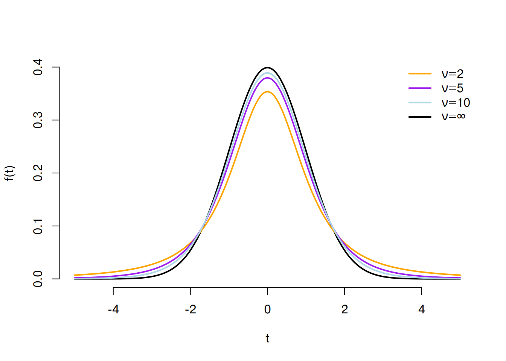
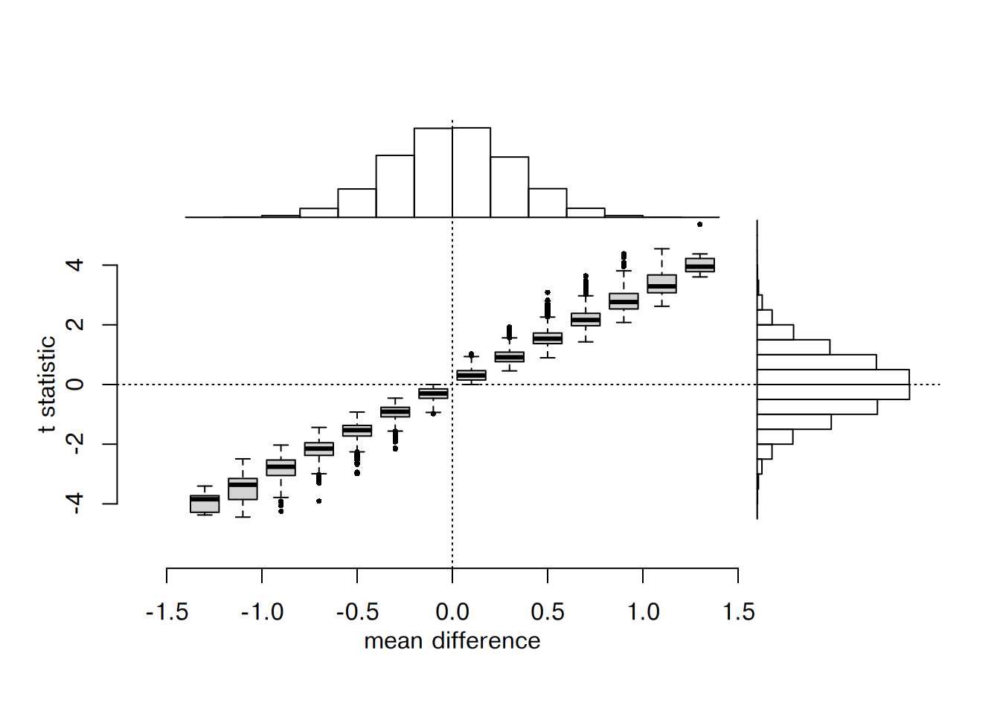

set.seed(20241203)
yA <- rnorm(20)
yB <- rnorm(20)Statisticians think along the lines of a distribution that generates data. The hope is that such a distribution is of a simple form, e.g. the normal distribution. The only problem: this remains a hope. Why? Because the you cannot possibly ascertain that the data is generated by any distribution. There are infinitely many distributions that could have generated the data such that even if you guessed correctly, you would not even know it. The quest for the distribution that generated the data is ill-defined.
Your inability to identify the distribution that generated the data has immediate repercussions on the validity of statistical inferences. These are based on statistical models that rely on assumptions on the distribution that generated the data. As outlined above, you have no way to ascertain that the data was generated by the conjectured distribution. Since the statistical model may be wrong because you do not know whether your assumptions on the data generation is correct, also the validity of your inferences becomes uncertain.
All models are wrong, some are useful. - George Box
This common aphorism attributed to George Box, a British statistician, summarizes the basic pathology of statistics as it is practiced today. Usefulness is the only criterion that measures the merit of statistical models. However, how can you measure usefulness if you are charting the unknown? Well, myriads of studies showed the usefulness of established statistical models. The crux is: they are useful until they are not and you may not be able to tell when they are not.
The useful \(t\)-test
The two-sample \(t\)-test is one of the most widely used statistical hypothesis tests. It is used to statistically ascertain whether the mean value of a metric attribute is different in two groups. Your working hypothesis could be that “the conditional mean of \(Y\) in the population is different in group \(\text{A}\) versus group \(\text{B}\)”. To test this hypothesis you gather data, i.e. you measure/observe the values of attribute \(Y\) from individuals drawn from the “population” (Grundgesamtheit) and determine their group membership. In most cases you will not be able to assay all individuals of a population but only a sample (Stichprobe) of it such that you are uncertain whether the conditional sample means of \(Y\) of group \(\text{A}\) versus \(\text{B}\) correspond to the population counterparts (if you sampled all the population then this uncertainty would be gone). In most cases, the conditional sample means will differ (even if they were the same in the population).
Here comes the first twist. Instead of testing your working hypothesis, you invent a new hypothesis, the null hypothesis, which corresponds to the deductive negation of your working hypothesis: the conditional means of attribute \(Y\) in the population are the same in group \(\text{A}\) and group \(\text{B}\). It is the null hypothesis, which you want to contradict (with data). From the rejection of the null hypothesis you want to infer the truth of your working hypothesis, now coined alternative hypothesis: the conditional means of attribute \(Y\) in the population are different in group \(\text{A}\) versus group \(\text{B}\).
What exactly is your null hypothesis? Colloquially, you think along the lines:
\[ \mu_\text{A} = \mu_\text{B}, \]
where \(\mu_\text{A}\) is the conditional mean of \(Y\) in the subpopulation of group \(\text{A}\), and \(\mu_\text{B}\) is the conditional mean of \(Y\) in the subpopulation of group \(\text{B}\). The problem with this colloquial statement: the conditional means are the same, fine, but you do not know their common value. So you deduce a consequence of your null hypothesis that does not require you to know this common value. If they are the same then their difference should be zero
\[ \mu_\text{A} - \mu_\text{B} = 0. \]
Your conjecture is that the difference is zero in the population and thereby that the observed difference of the sample conditional means \(\Delta \bar{y}\) is due to sampling
\[ \bar{y}_\text{A} - \bar{y}_\text{B} = \Delta \bar{y}. \]
Statistics should provide an estimate for the probability \(\operatorname{P}\left(\vert\Delta \bar{Y}\vert \ge \vert \Delta \bar{y}\vert ~ \vert ~ \mu_\text{A} - \mu_\text{B} = 0, N\right)\) to draw samples of size \(N\) from a population, where the difference of the conditional means is zero, that exhibit at least the observed (absolute) difference. From this estimate you can judge whether this probability (a.k.a. \(p\)-value) is sufficiently small to warrant your decision to reject the null hypothesis.
In order to compute the \(p\)-value, you need the distribution of the new random variable \(\Delta \bar{Y}\) in the null population. Now, this is a very uncomfortable situation. Statistics asks you to come up with an idea how the distribution of \(\Delta \bar{Y}\) should be if the conditional means are the same. At this point you could come up with a lot of ideas how this distribution looks like. In fact, you could come up with infinitely many of them. So the problem seems to be ill-defined. Now, you turn to a useful statistical model to turn the ill-defined problem to a well-defined one. You assume that the metric variable \(Y\) conditioned on the group membership \(X \in \{\text{A}, \text{B}\}\) is normally distributed with conditional mean \(\mu_X\) and conditional variance \(\sigma_X^2\). That is the sample means \(\bar{Y}_\text{A}\) and \(\bar{Y}_\text{B}\) are by virtue of the central limit theorem approximately normally distributed
\[ \sqrt{N_X}~\left(\bar{Y}_X - \mu_X\right) \overset{d}{\to}\mathcal{N}\left(0, \sigma_X^2\right), \]
with the group membership \(X \in \{\text{A}, \text{B}\}\) and \(N_X\) the group size, \(\bar{Y}_X\) the sample mean of the metric variable \(Y\), \(\mu_X = \mathbb{E}(Y_X)\) the expected value of Y in the population and \(\sigma_X^2\) the variance of \(Y\) in the population in group \(X\). That is the sample mean \(\bar{Y}_X\) is approximately distributed as \(\mathcal{N} \left(\mu_X, \sigma_X^2 / N_X\right)\). From this is follows that the difference of the sample means \(\Delta \bar{Y}\) is approximately distributed as \(\mathcal{N}\left(\mu_\text{A} - \mu_\text{B} = 0, \sigma_\text{A}^2 / N_\text{A} + \sigma_\text{B}^2 / N_\text{B}\right)\).
You see how the null hypothesis has conveniently fixed the mean of the null distribution, which leaves only the two conditional variances \(\sigma_\text{A}^2\) and \(\sigma_\text{B}^2\) unspecified. At present your best estimate for the two variances is given by the data. So using the unbiased estimators for the sample variances
\[ s_X^2 = \frac{1}{N_X - 1}\sum_{i = 1}^{N_X} \left(y^{(X)}_i - \bar{y}_X\right)^2 \]
as plug-in estimates for the population variances, all unknowns are fixed allowing for calculating the \(p\)-value using the normal distribution
\[ \Delta \bar{Y} \sim \mathcal{N}\left(0, \frac{(N_\text{A} - 1)~s_\text{A}^2 + (N_\text{B} - 1)~s_\text{B}^2}{N_\text{A} + N_\text{B} - 2}\right). \]
Here comes the second twist. As noted by William S. Gosset
The usual method of determining the probability that the mean of the population lies within a given distance of the mean of the sample, is to assume a normal distribution about the mean of the sample with a standard deviation equal to \(s / \sqrt{n}\), where \(s\) is the standard deviation of the sample […]. But, as we decrease the number of experiments, the value of the standard deviation found from the sample of experiments becomes itself subject to an increasing error, until judgments reached in this way become altogether misleading. - Student (1908).
To account for the uncertainty of the estimators for the conditional variances, Gosset turned to the \(t\)-statistic
\[ t = \frac{\bar{y}_\text{A} - \bar{y}_\text{B}}{s_\text{p}~\sqrt{\frac{1}{N_\text{A}} + \frac{1}{N_\text{B}}}}, \]
where
\[ s_\text{p} = \sqrt{\frac{(N_\text{A} - 1)~s_\text{A}^2 + (N_\text{B} - 1)~s_\text{B}^2}{N_\text{A} + N_\text{B} - 2}} \]
is the pooled standard deviation of the two samples. Now the null hypothesis is not anymore
\[ H_0: \mu_\text{A} - \mu_\text{B} = 0 \]
but
\[ H_0': \frac{\bar{y}_\text{A} - \bar{y}_\text{B}}{s_\text{p}~\sqrt{\frac{1}{N_\text{A}} + \frac{1}{N_\text{B}}}} = 0, \]
i.e. that the \(t\)-statistic is zero.
The corresponding null distribution is the so-called \(t\)-distribution with \(\nu = N_\text{A} + N_\text{B} - 2\) degrees of freedom, which finally can be used to compute the \(p\)-value.

In Figure 1 the \(t\)-distribution with \(\nu = 1, 2, 10\) degrees of freedom is shown. The \(t\)-distribution takes into account the uncertainty of the plug-in estimate for the pooled variance. If the sample size is low, e.g. \(N_\text{A} = 2\) and \(N_\text{B} = 2\) resulting in \(\nu = 2\) (orange line), the \(t\)-distribution has considerable longer tails compared to the standard normal distribution (black line). By increasing the sample size and hence the degrees of freedom \(\nu\) the \(t\)-distribution converges to the standard normal distribution \(\mathcal{N}(\mu = 0, \sigma^2 = 1)\).
The \(t\)-test is in line with your intuition. You want to evaluate the difference of the conditional means by taking into account the variability via the pooled (sample) standard deviation. Hence, the \(t\)-statistic depends not only on the difference but also on the pooled standard deviation. The \(t\)-statistic represents a so-called pivotal statistics, as its value depends on the data but its distribution is independent on the data. The \(t\)-test is useful, as it can funnel different problems through a single statistical testing procedure! You apply the \(t\)-test when you want to know whether the mean height in human females and males is the same but also when you want to know whether the mean expression of MYC is the same in tumor versus normal samples.
So what is pathological in the \(t\)-test?
- You assumed that the metric attribute \(Y\) is conditioned on the group normally distributed.
- Instead of your original null hypothesis: “the difference of the means is zero”, you test a modified null hypothesis: “the value of the \(t\)-statistic is zero”.
The first point pertains to the question: “Can you apply the \(t\)-test for your problem?” How can you ascertain that the normal distribution assumption is valid? And what happens if not? It is discomforting, the answer to the first question is: you cannot. All you can do is to show that the assumption is invalid. Then the answer to the second question is clear: do not apply the \(t\)-test.
The second point pertains to the question: “Are these two null hypotheses equivalent?” Assume you draw 20 samples each from a standard normal distribution for group \(\text{A}\) and for group \(\text{B}\).
For this sample the difference of the conditional means is \(\Delta \bar{y} = 0.1290112\). The \(t\)-test yields this result (assuming equal variance, i.e. Student’s \(t\)-test)
(tTest <- t.test(yA, yB, var.equal = TRUE))
Two Sample t-test
data: yA and yB
t = 0.39827, df = 38, p-value = 0.6927
alternative hypothesis: true difference in means is not equal to 0
95 percent confidence interval:
-0.5267489 0.7847713
sample estimates:
mean of x mean of y
0.06532996 -0.06368126 So what is the \(p\)-value for the original null hypothesis? As we know the truth, we repeatedly (\(M = 100~000\)) draw samples from the standard normal distribution and calculate the difference of the means \(\Delta \bar{Y}\), the pooled (sample variance) \(s_\text{p}\), and the \(t\)-statistic:
M <- 100000
sampledMeans <- lapply(
seq_len(M),
function(i){
xA <- rnorm(20)
xB <- rnorm(20)
dx <- mean(xA) - mean(xB)
sp <- sqrt((19 * var(xA) + 19 * var(xB)) / 38)
c(dY = dx, sp = sp, t = dx / (sp * sqrt(1/10)))
}
)
sampledMeans <- do.call("rbind", sampledMeans)diffMean <- mean(yA) - mean(yB)
tStatistic <- tTest$statistic
dYP <- sum(abs(sampledMeans[, "dY"]) >= diffMean) / M
tP <- sum(abs(sampledMeans[, "t"]) >= abs(tStatistic)) / MIn this example the “bootstrap” \(p\)-value for the mean difference is \(0.68528\), which is smaller than the “bootstrap” \(p\)-value for the \(t\)-statistic of \(0.69434\), which is close to the \(p\)-value obtained by using the \(t\)-distribution \(0.6926601\). Such a discrepancy is to be expected. Since the \(t\)-statistic is defined to be \[ t = \frac{\Delta \bar{Y}}{s_\text{p}~\sqrt{\frac{1}{N_\text{A}} + \frac{1}{N_\text{B}}}}, \] there are different values for the \(t\)-statistic for the same mean difference \(\Delta \bar{Y}\) (Figure 2).

The \(t\)-test null hypothesis is not equivalent to the “original” null hypothesis. Depending on the pooled sample variance \(s_\text{p}^2\) different \(\Delta \bar{Y}\) can attain the same value for the \(t\)-statistic. Figure 2 demonstrates that very different mean differences can have very similar values for the \(t\)-statistic. So the \(t\)-test tests the null hypothesis: “the \(t\)-statistic is zero” and not your original null hypothesis “the difference of the conditional means is zero”.
Where does that leave the \(t\)-test? It may or may not be applicable for your problem. It actually tests a modified null hypothesis that is no equivalent to what you thought you test. I suggest, don’t use the \(t\)-test! Use the TOTEM \(I\)-test instead. The \(I\)-test does not require any distribution assumptions. It uses the principle of minimal \(I\)-divergence from the empirical distribution \(\mathfrak{f}\) of the data to reweight the data points yielding a so-called hypothesis distribution \(\mathfrak{p}_\text{H}\). The hypothesis distribution in turn constitutes a statistical model for a population that fulfills the null hypothesis, e.g. the conditional means are the same. The hypothesis distribution alone mitigates the ambiguity in the construction of the null distribution required for bootstrapping. However, even more importantly, we derive the ultimate pivotal statistic \(i = 2~N~\text{D}\left(\mathfrak{f}~\vert\vert~ \mathfrak{p}_\text{H} \right)\) and its distribution, the \(\chi^2\) distribution with the number of hypothesis conditions corresponding to the degrees of freedom. If you want to know more, please visit A totally empirical basis of science at arxiv.org.
References
Student. 1908. “The Probable Error of a Mean.” Biometrika 6 (1): 1–25. https://doi.org/10.2307/2331554.